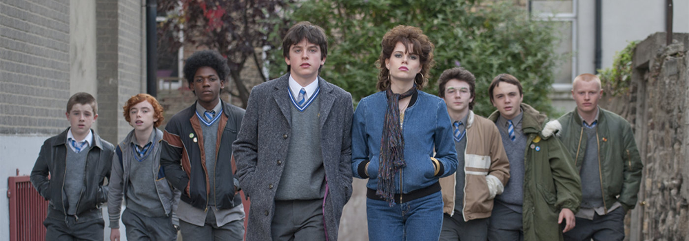

본문콘텐츠영역
About

-
- Love I First Met,
Music I First Made
- pitapatLove I met for the first time, music I made for the first time! 'Connor' falls in love with the first sight when I see a wonderful 'Lafina' like a model at the school where I went to transfer. 'Connor', who lied to Rafina that he was playing a band with a desire to show well, suggests music video appearances and gets approval. For a while, 'Connor' collects the clumsy members and forms a band called 'Sing Street' and starts to make music by visiting the albums in the house such as 'Duranduran', 'A-ha', 'The Clash'. Starting with the first song, 'Connor', who moves the heart of 'Lafina', makes the best song for her and prepares the first concert of her life. The first song of life for you! The heartbreaking sound of 'Sing Street' begins now!
Trailer
- SCENE#You must never do it properly
- Lafina, who was going to pretend to fall into the sea while filming 'A Beautiful Sea' in Buga, really jumped into the sea. Rafina, who can not swim, barely comes out of the water with the help of Connor.
- SCENE#Drive It Like You Stole It
- I am definitely holding the steering wheel of my life, but I live by looking at the people around me. Connor also had a lot to notice because he was dreaming of. But I realized that through Rafina, it was not anything to do moderately. Rafina was the driving force behind his movements.
- 
- SCENE#I can't leave unless it's now
- Connor and Rafina are leaving for London for their dreams. All I had was Rafina's portfolio and Sing Street's demo tape Brandon is happy to help them to the marina with a small boat. I see the back of the two people leaving and I cheer a little. Connor and Rafina's challenge may have been another start for Brandon.
Character

- Conor.
A normal Irish boy. Meet a girl who is at a glance, find a dream, and play futuristic music.

- Raphina.
Connor's Muse. muse as a driving force. Connor's moderately light music led to his dream.

- Brandon.
a support group that provides practical assistance Looking at the music corner, I am courageous to try something myself.
top